Produtos que valorizam a agricultura familiar, a economia solidária e o trabalho artesanal.
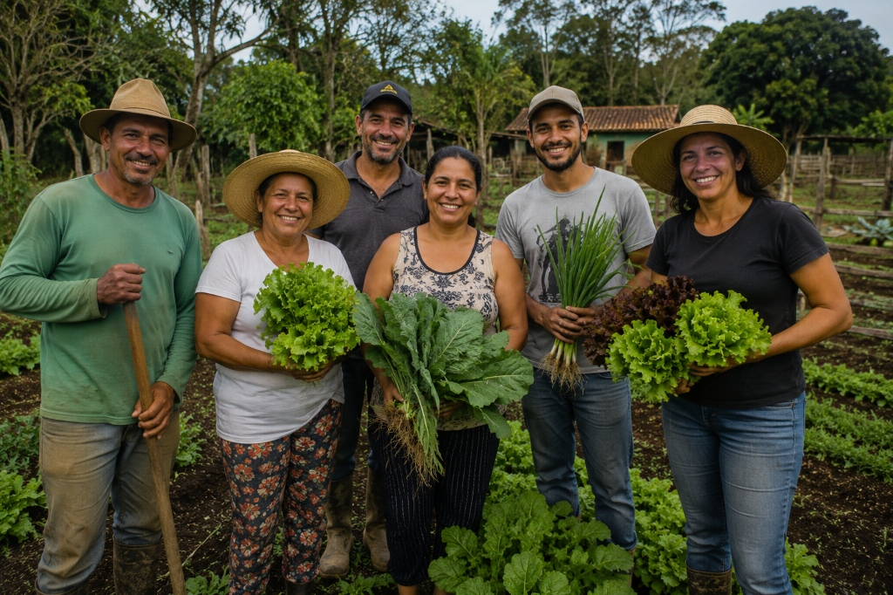
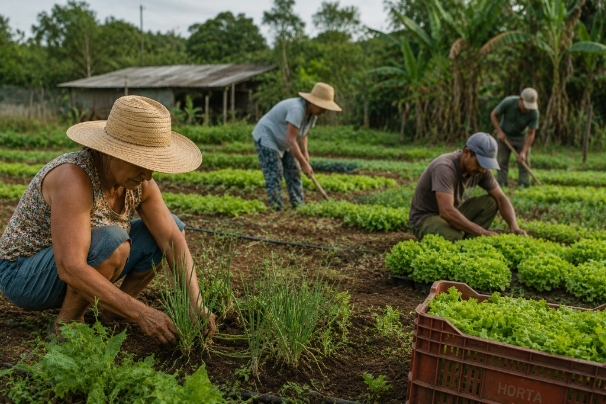
A Toca da Terra conecta consumidores a produtos produtos produzidos com dedicação por agricultores familiares, artesãos e empreendimentos da economia solidária.
A Toca da Terra valoriza o trabalho feito à mão e com propósito. Conheça as categorias de produtos artesanais e cooperativos que você encontra em nossa loja física:
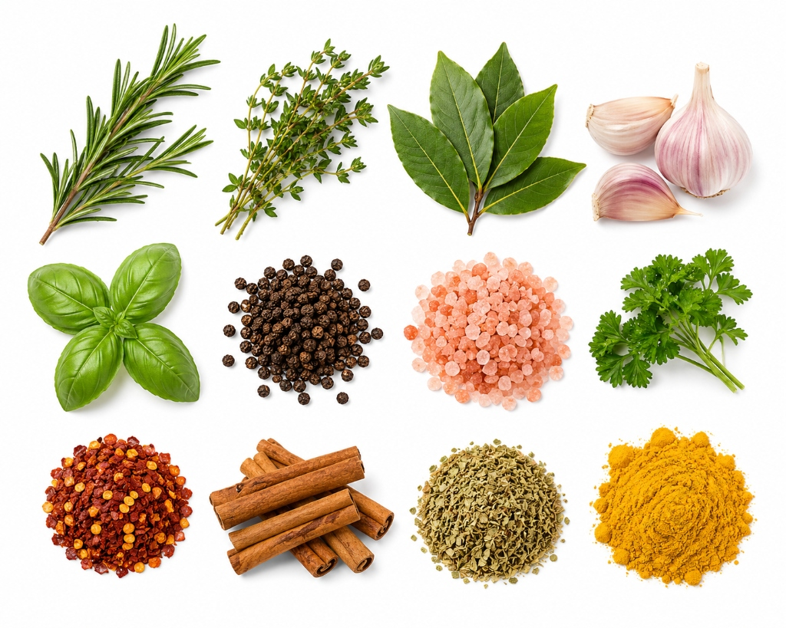
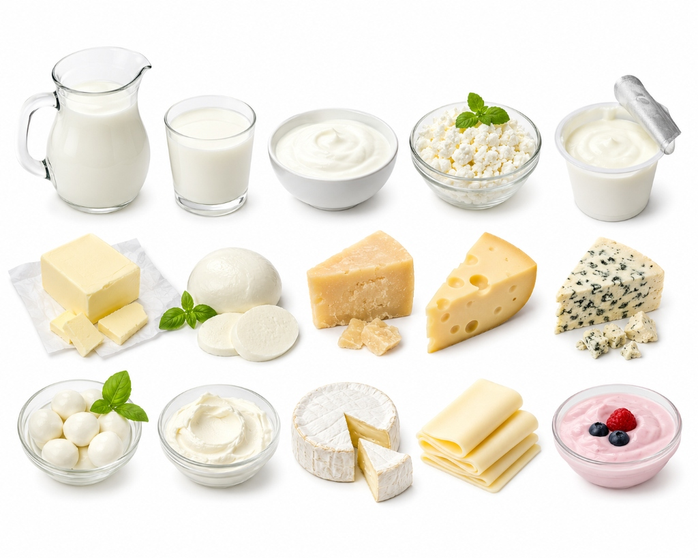
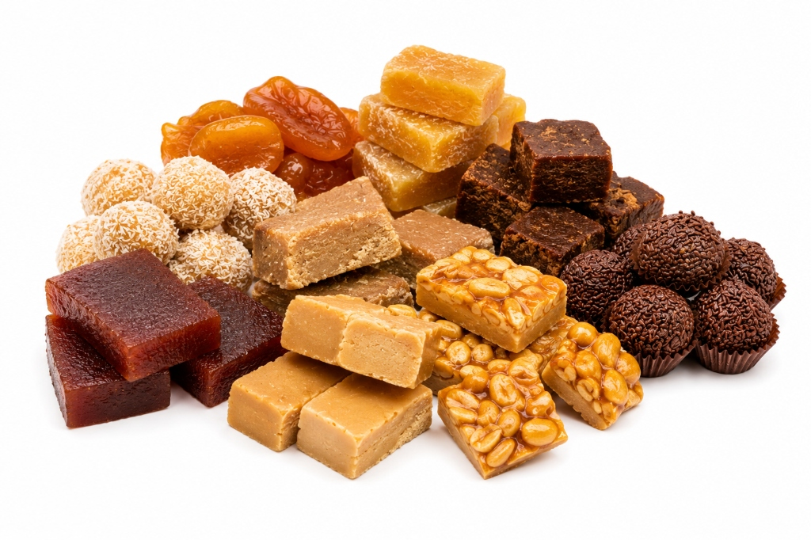
A Toca da Terra organiza feiras periódicas para fortalecer a agricultura familiar e incentivar a economia solidária regional. Esses eventos são pontos de encontro que valorizam o trabalho de pequenos produtores e artesãos locais, trazendo o melhor da nossa terra diretamente para você.
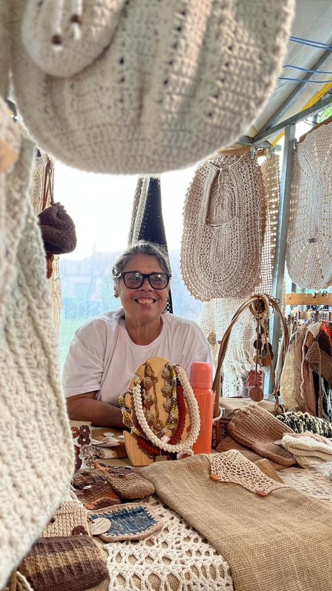
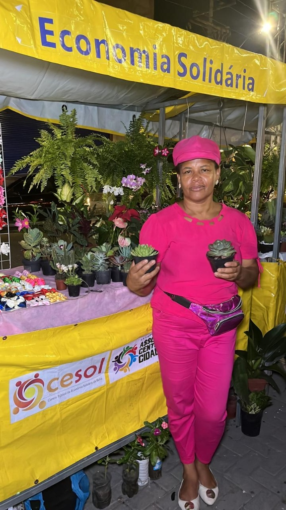
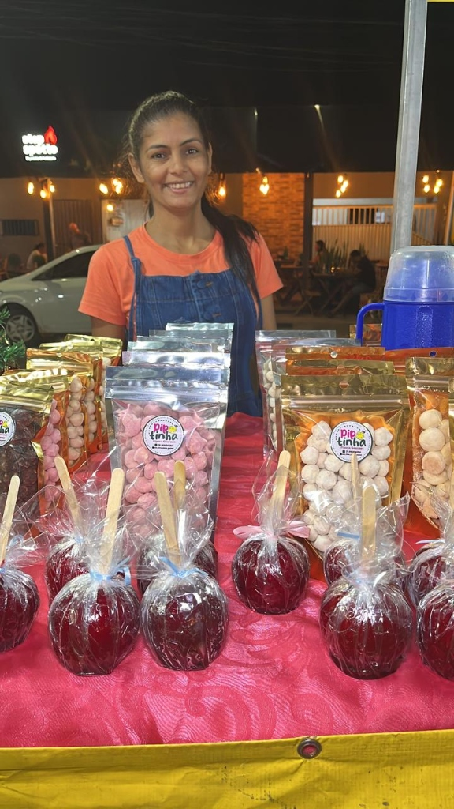
Escolher nossa loja significa se conectar com propósitos e apoiar um ciclo socioeconômico sustentável e local.
Ao realizar sua compra, os valores retornam majoritariamente a quem plantou e teceu, sem intermediários que encarecem o processo.
Cada peça artesanal, doce ou laticínio carrega uma assinatura única e histórias de famílias dedicadas de Feira de Santana e região.
Prezamos por transparência e ética em todas as etapas comerciais, garantindo equilíbrio financeiro entre produtor e consumidor.
Valorizamos o trabalho de pequenas propriedades rurais, promovendo a sucessão familiar do campo e a preservação de técnicas tradicionais.
Apoiamos empreendimentos coletivos, cooperativas e grupos vulneráveis, reforçando os laços de união social na comunidade.
Compromisso com o meio ambiente através do incentivo a embalagens conscientes, menor desperdício e respeito às matérias-primas naturais.
Longe da produção industrial massiva, nossos itens nascem de mentes, corações e mãos humanas que põem amor em cada detalhe.
Conheça o dia a dia, a produção e as mãos por trás de cada detalhe que chega à Toca da Terra. Clique nas imagens para ampliar.
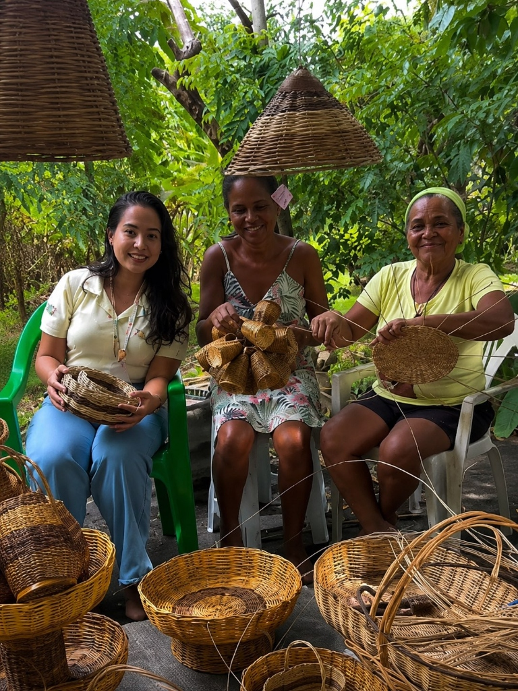
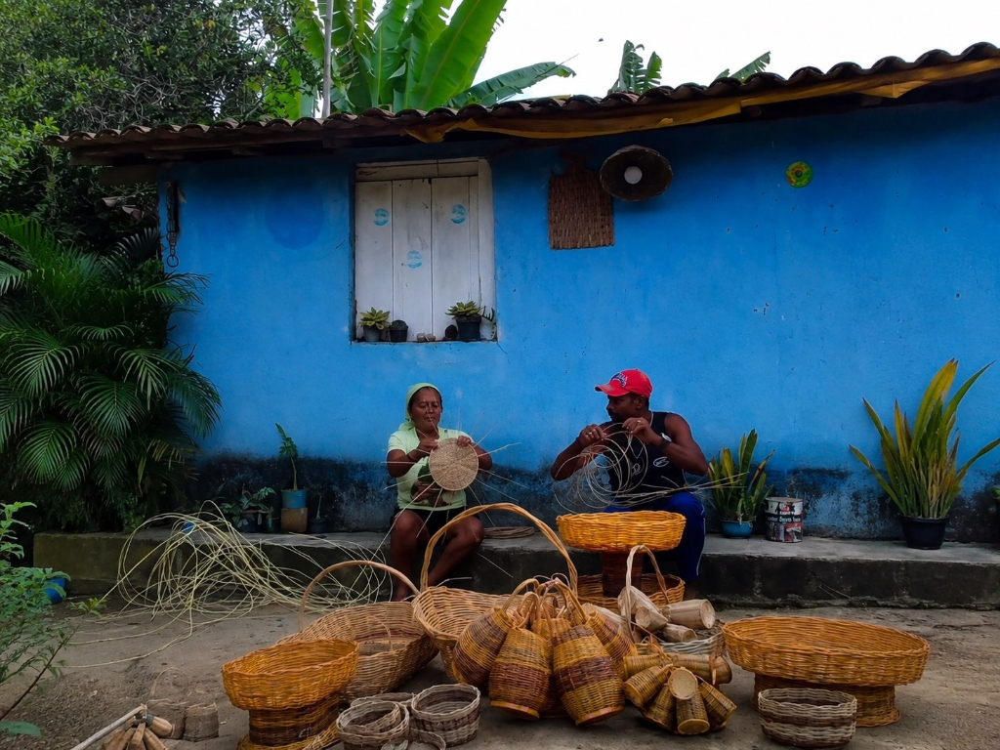
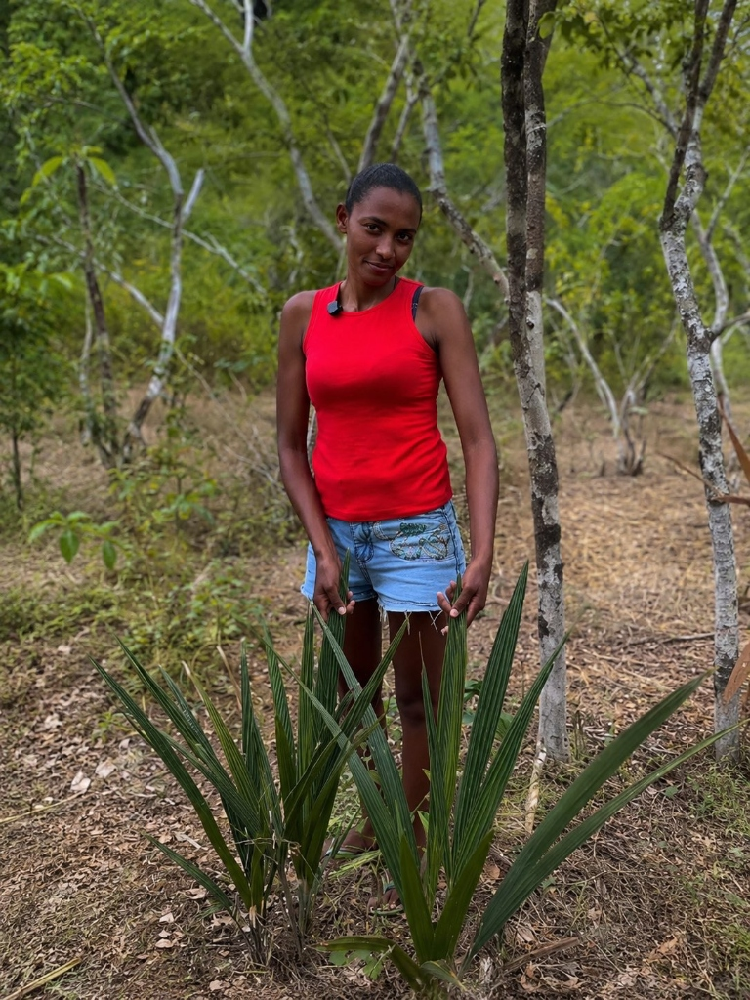
Experimente e veja de perto a riqueza de nossos produtos artesanais e sinta o acolhimento do nosso espaço.
Loja de Conveniência
R. Barão do Rio Branco, 1290
Centro, Feira de Santana - BA
CEP: 44001-232
Segunda a Sexta: 09h às 18h
Sábado: 09h às 13h
Domingo: Fechado
Escolha produtos que carregam propósito, tradição e impacto positivo.
Falar no WhatsApp